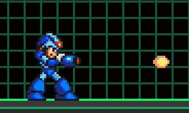
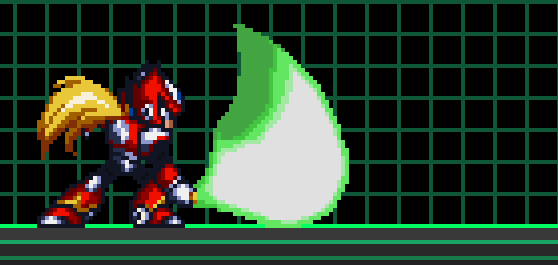
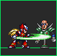
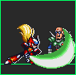
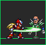
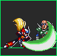

Mega Man X is the eponymous protagonist of the Mega Man X series. He was the successor of the original Mega Man and is Dr. Thomas Light's greatest creation. X is a Maverick Hunter who fought alongside his partner Zero in order to maintain peace and stability in the world and protect humans and Reploids alike from Maverick Reploids, though X would like nothing better than the opportunity to stop fighting.
X is the game's general purpose ranged trooper. His primary attack is shooting whatever weapon he currently has equipped. By holding down the attack key, you can charge your weapon; each weapon has a different charge effect. All special weapons run on limited ammo. The X-Buster does not have an ammo limitation.
See the weapon guide here for a guide to X's arsenal: Weapon Guide
X can use Metal (a currency earned on each kill) to purchase armor upgrades in the in-game upgrade menu. Different armor sets from the various SNES games are available. You can even mix armors from the different armor sets, though you won't be able to take advantage of set bonuses unless you equip all 4 armor pieces in the same armor set.
See the armor guide here for a complete guide to X's upgrades: Armor Guide
In general, X is extremely versatile, with a vast array of special weapons and armor available to choose from depending on the situation. Though primarly focused on ranged attacks, some special weapons allow for melee playstyles as well. As X, you should constantly evaulate the flow of the game, considering which weapons allies or enemies have equipped, whether a flag needs to be defended from heavy attack, or the distribution of characters on your team or the other. Many of his special weapons have indispensable support effects in team modes that no other character can provide. Overall a more strategic, defensive tactician.
As X, you will want to make heavy use of charge shots, his primary distinguishing ability from other characters. Charge shots use a lot of ammo but tend to be very powerful and debilitating, often causing full flinch or large area of effect spells. While the DPS of charge shots is low due to the charge time, they are effective forms of burst damage and be quickly followed by uncharged shots for additional followup damage. Arm upgrades greatly increase the effectiveness of charge shots and should be prioritized in modes where kill count is the objective.

Zero is the deuteragonist of the Mega Man X series. He is the successor of Bass and the greatest creation of Doctor Albert W. Wily. A high ranking Maverick Hunter and legendary freedom fighter, he's a die-hard warrior who doesn't hesitate to take action. However, behind his cold and emotionless attitude lies a wounded soul.
Zero is the game's main close-ranged specialist, with combo-oriented gameplay
  
 Vile is a major antagonist in the Mega Man X series. He used to be a member of the Maverick Hunters and was ranked S-A Class in Sigma's 17th Elite Unit prior to his commander's rebellion against humanity. Due to being a borderline Maverick, he was removed from duty and detained, being freed during Sigma's rebellion so he can cause as much destruction as he wishes.
Vile is rather unique among characters in that he can summon and command various Ride Armors with his third weapon slot. Ride Armors have higher HP than Vile and can take hits for him; however, be careful, as enemies can aim at your exposed head in the cockpit seat to deal damage directly to Vile, who only has 16 bars of health.
Vile does not spawn with any Ride Armors and it costs 5 Metal to summon a Ride Armor, so he must progress thorugh a match and earn kills before calling down the big guns. He comes with three switchable weapons: the Front Runner, the Vulcan and the aformentioned Ride Armor slot. In addition, SPECIAL button activates many secondary abilities, which tend to be debilitating traps and bombs that provide effective support for his regular weapons.
Axl is the tritagonist of the Mega Man X series. He is a prototype of the New Generation Reploids with the unique ability to mimic the external and internal characteristics of anyone he encounters. Axl has had important roles in Mega Man X7 and X8, effectively making him the third playable protagonist of the Mega Man X series alongside Mega Man X and Zero.
Like X, Axl is a ranged character that can switch between various weapons. Unlike X however, he uses actual guns. These firearms can be aimed anywhere on the screen, and at any angle. Axl also has a unique Copy Shot ability which lets him transform into opponents, and even an assassination ability when disguised that can kill in one hit if aimed at the head.
These qualities make Axl a "spy agent" type character with a specialist role on the team, using his aiming capabilities to assassinate key threats, and sneaking behind enemy lines while disguised to sabotage the objective.

Sigma is the primary antagonist of the Mega Man X series. Once the noble leader of the Maverick Hunters, Sigma fell into insanity and turned Maverick himself, becoming the leader of all haywire Reploids and waging war on humanity. Although he has been destroyed countless times, Sigma's programming always survives and builds himself a new form, ready to menace the world once again.
Dynamo is a powerful Reploid that was hired by Sigma to scatter a virus inside the abandoned space colony Eurasia and prepare it to crash into the Earth. Dynamo is very laidback, treats the Maverick Hunters like rivals rather than adversaries and plays their battles as if they were for sport. He is restless and enjoys causing chaos to keep things interesting.
"Multi strategy fighter with great mobility options."

Iris is a major character of the Mega Man X series. serving as tritagonist in Mega Man X4. Iris is introduced as Zero's Love interest who gets caught in the middle of the civil war between her brother fighting for Repliforce and her lover fighting for the Maverick Hunters. Iris was a kind-hearted Reploid who desired peace for all.
"Setplay styled zoner"
Highmax is an antagonist from Mega Man X6. Created by Gate using data from Zero's DNA, he is the leader of the Nightmare Investigators, drawing other Reploids to join himself and Isoc with his impressive might.
The "Air Bike Companion", better know by the fan nickname "Green Biker Dude" (abbreviated as GBD), was an unnamed green Maverick Hunter who accompanied X in the Opening Stage of Mega Man X2. As his nickname suggests, he is a male Reploid with green armor and rides a Ride Chaser bike. He was destroyed by the shots of a Cannon Driver while preforming a wheelie on the way to the Maverick Factory Stage.
"Hit and run type trickster that can summon ride chasers."
Magma Dragoon is one of the eight Maverick bosses from the game Mega Man X4. He at one point was a member of the Maverick Hunters. He eventually joined Repliforce after the unit was formed. One day, a mysterious man offered him a chance to fight X and Zero should he betray Repliforce. Agreeing to the plan, he attacked the Sky Lagoon, causing it to crash into the city, killing thousands of civilians, resulting in Repliforce being blamed for the incident.
"Shoto Styled Fighter with burning damage passive"

Zain is one of the Shadow Hunters from Mega Man Xtreme. He and his partner Geemel worked with Techno to hack the Mother Computer in Hunter Base. He is a quiet and proud individual and seems to only care about fighting strong opponents. He is also quite loyal to his companion, Geemel.
"High Damage fighter with defensive skills but can't combo without resources."
Zain uses a "Koku" System to execute most of his attacks, it recharges automatically and can be stacked up to 8.